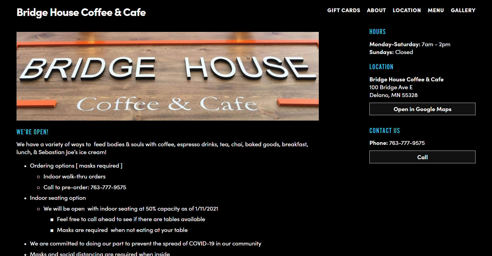
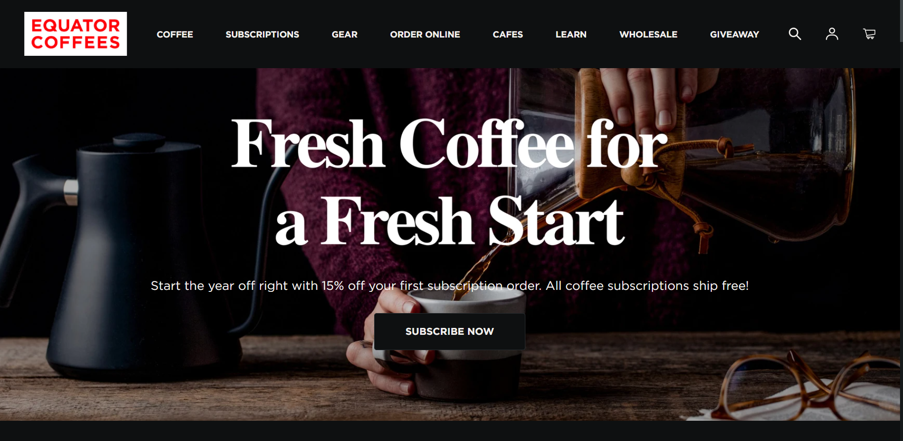

This is the website i want to try and redesign. Most of the content will be based off this page, such as the menu, about, gift cards, location and more.
This is the website i want to refrence from and use the stye of. Its not a Coffee shop but a coffee bean supplier. The design is nice and follows a general idea of what im thinking.
